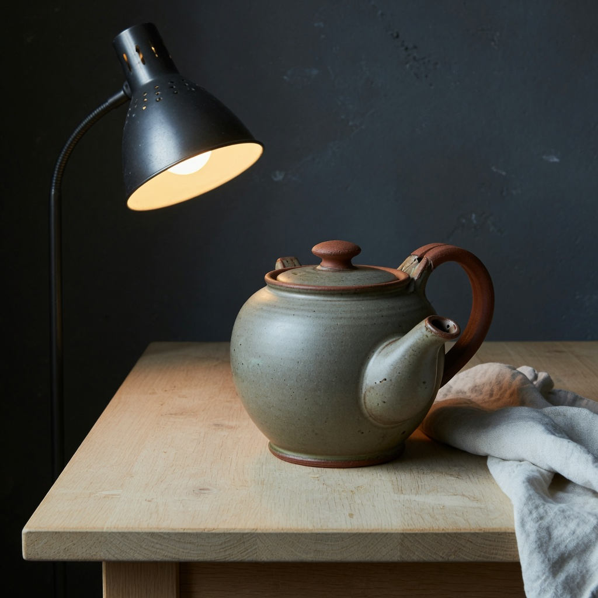
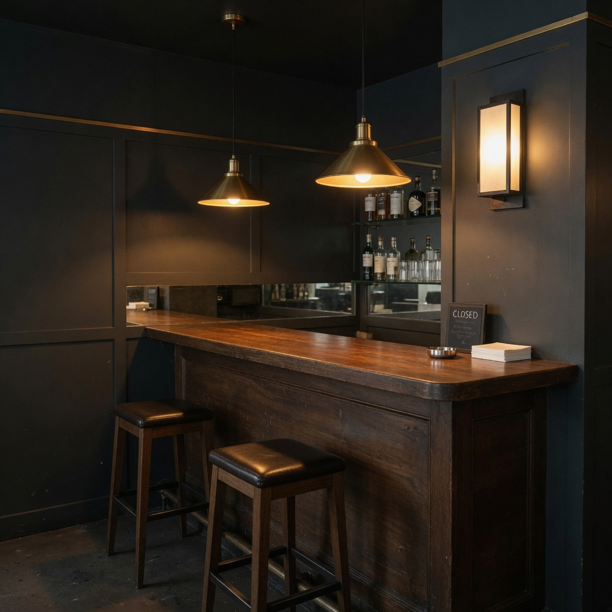

Lamp-present locked anchors
Night stills that already contain practical lamps. Used only by honest-halation studies.
Five night stills with visible practicals. Used only by honest-halation studies.
night portrait with practical
night creature with practical
night path with street lamp
night still life with desk lamp

baseline
night interior with practicals

baseline
Entanglement
- none
Next
- none